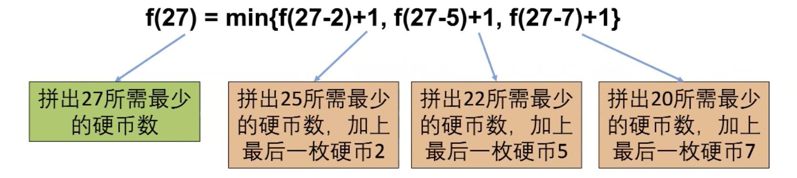
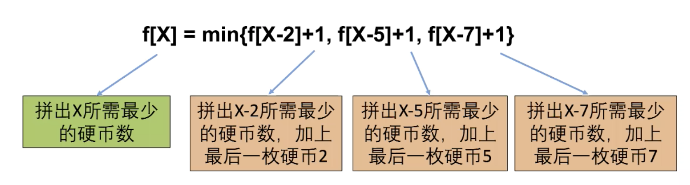
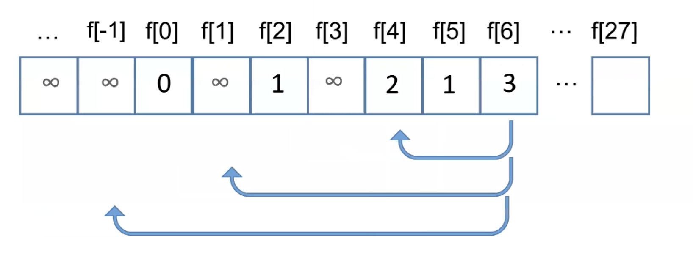

1 动态规划题目特点
- 计数类
- 有多少种方式走到右下角
- 有多少种方法选出K个数使得和是sum
- 求最大最小值（DP最大的一类）
- 从左上角走到右下角路径的最大数字和
- 最长上升子序列长度
- 求存在性
- 取石子游戏，先手是否必胜
- 能不能选出K个数使得和是sum
2 dp解题步骤
以 Coin Change 为例；
三种硬币，分别面值2元，5元和7元， 没种硬不都有足够多，去书店买本书需要27元。如何用最少的硬币组合正好付清，不需要对方找钱
分析： 这题出现求最少，显然可以使用DP方法来解决
2.1 动态规划组成部分一： 确定状态
2.1.1 状态在动态规划中的作用属于定海神针
2.1.2 简单来说，解动态规划的时候需要开一个数组，数组的每个元素f[i] 或者 f[i][j]代表什么； 类似于解数学题中，X， Y，Z代表什么；
2.1.3 确定状态需要两个意识：
2.1.3.1 最后一步
虽然我们不知道最优策略是什么，但是最优策略肯定是K梅硬币a1,a2,…,ak 面值加起来是27；
最后一步指的就是最优策略中的最后一个决策，对应到这一题就是一定会有一枚最后的硬币决策： ak， 那么除了这枚硬币，前面硬币的面值加起来是27-ak；
关键点1：
我们不关心前面的 k-1 枚硬币是怎么拼出27-ak的（可能有1种拼法，可能有100种拼法），而且我们现在甚至还不知道ak 和k， 但是我们确定前面的硬币拼出了 27-ak；
关键点2:
因为是最优策略，所以拼出27-ak的硬币数一定要最少，否则这就不是最优策略了；
解析关键点2： 比如最优策略要用5枚硬币，假设最后一枚是5元面额，那么4枚硬币组成了22元。你不可能用3枚，2枚甚至1枚拼成22元； 浅显的道理，如果用3枚可以拼出来22元的话，那么最优策略要用5枚的假设就不成立；
2.1.3.2 子问题
我现在当然想求K，但是想求K的话，需要知道前面k-1等于几。（即最少需要多少枚硬币可以拼出27-ak）
所以，我们的要求就变成了：最少要用多少枚硬币可以拼出27-ak枚硬币；
原问题是最少用多少枚硬币拼出27；
我们将原问题转化成了一个子问题，而且规模更小： 27-ak
那该如何定义状态呢，一旦子问题出来了，状态就直接把相同的汉字copy下来。即最少用多少枚硬币拼出X
为了简化定义，我们设状态 f(x)=最少用多少枚硬币拼出x结合这一题就是f(x)=最少用多少枚硬币拼出27.整个问题就变成，以前求f(27),现在求f(27-ak);
等等，我们还不知道最后那枚硬币ak是多少， 当然最后那枚硬币ak只可能是2，5或者7
如果ak是2的话，f(27)应该是f(27-2)+1（加上最后这一枚硬币2）
如果ak是5的话，f(27)应该是f(27-5)+1（加上最后这一枚硬币5）
如果ak是7的话，f(27)应该是f(27-7)+1（加上最后这一枚硬币7）
除此之外，没有其他的可能了；
因为我们需求最少的硬币数，所以：
1 | f(27) = min{f(27-2)+1, f(27-5)+1, f(27-7)+1} |

2.1.4 递归解法的问题
递归做了很多重复计算，效率低下
如何避免？
DP是将计算结果保存下来，并改变计算顺序；
2.2 动态规划组成部分二： 转移方程
设状态f[x] = 最少用多少枚硬币拼出X；
对于任意X

2.2.1 f[x] 与 f(x)的区别
f[x] ，[] 代表数组下标
f(x) ，（）代表函数调用
2.3 动态规划组成部分三： 初始条件和边界条件
f[x]=min{f[x-2]+1, f[x-5]+1, f[x-7]+1}
两个问题
x-2, x-5或者x-7 小于0怎么办？什么时候停下来？
如果不能拼出Y，就定义f[Y] = 正无穷，例如 f[-1] = f[-2] = … = 正无穷
所以f[1] = min{f[-1]+1, f[-4]+1, f[-6]+1} = 正无穷，表示拼不出来1；
初始条件： f[0] = 0; 因为初始条件用转移方程是算不出来的。但我又需要它的定义。
根据 f[0] = min{f[-2]+1, f[-5]+1, f[-7]+1} 算，f[0]是正无穷的。而我们明明知道，f[0] 不等于正无穷，而是等于0，所以需要手动制定。有的时候初始条件不需要给很多个，比如f[0], f[1], f[2] 等等是不需要额外多个去定义，定不定义该值取决于能否根据其他预设的值;比如f[1] 是正无穷，f[2] = {f[0]+1, f[-3]+1, f[-5]+1} 是 1， 然后后面的值都能基于此算出来了；
初始条件的实质就是把那些最小的值定义下来，边界情况的实质就是不要数组越界；不管数组往下越界到负数，还是数组往上越界超过了都不行；
2.4 动态规划组成部分四：计算顺序
拼出X所需要的最少硬币数： f[X] = min{f[X-2]+1, f[X-5]+1, f[X-7]+1}
初始条件： f[0] = 0
然后计算 f[1], f[2],… , f[27] （对于此题来说，是从小到大来计算，DP大多数情况下都是从小到大，二维的话就是从上到下，从左到右）
计算顺序只有一个原则，那就是当我们计算到f[X]时，f[X-2], f[X-5], f[X-7] 都已经出结果了；
2.5 动态规划计算步骤
f[X] = 最少用多少枚硬币拼出X
f[X] = 正无穷 表示无法用硬币拼出X

每一步尝试三种硬币，一共27步；
与递归算法相比，没有任何重复计算；
算法时间复杂度（即需要进行的步数）： 27*3 (总面额*多少种硬币)
1 | /** |
2.6 小结
求最值型动态规划
动态规划组成部分：
- 确定状态
- 最后一步 (最优策略中使用的最后一枚硬币ak)
- 化成子问题 （最少的硬币拼出更小的面值27-ak）
- 转移方程
- f[X] = min{f[X-2]+1, f[X-5]+1, f[X-7]+1}
- 初始条件和边界条件
- f[0] = 0, 如果不能拼出Y，f[Y]= 正无穷
- 计算顺序
- f[0], f[1], f[2], …
消除冗余，加速计算；